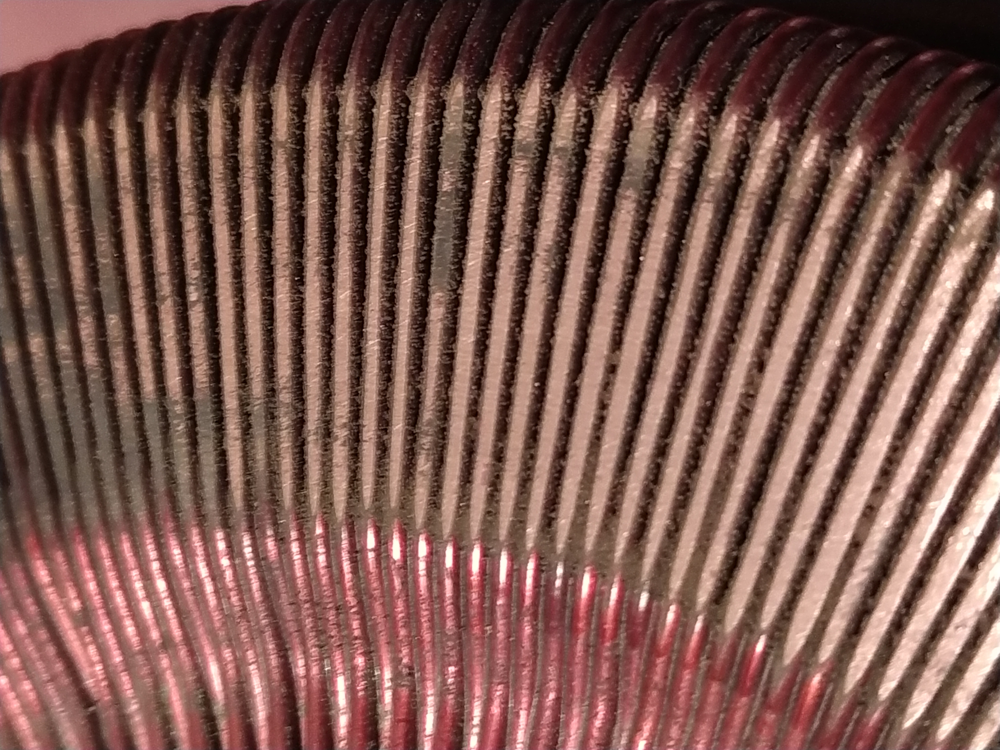
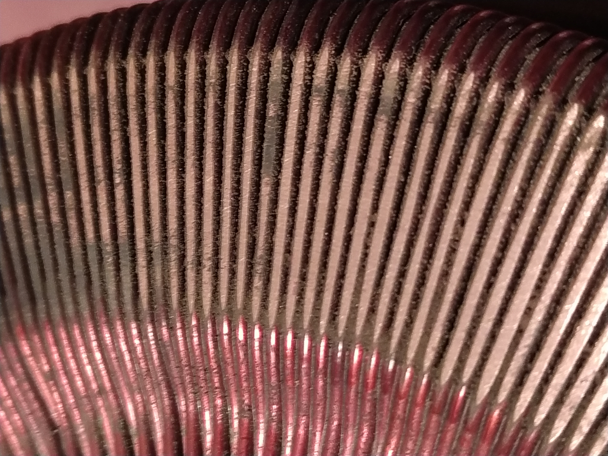
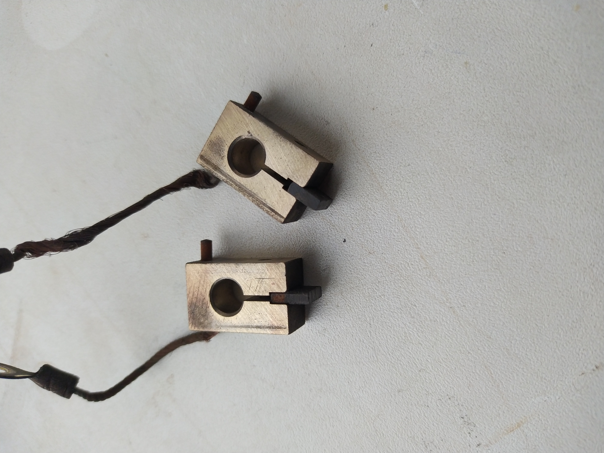
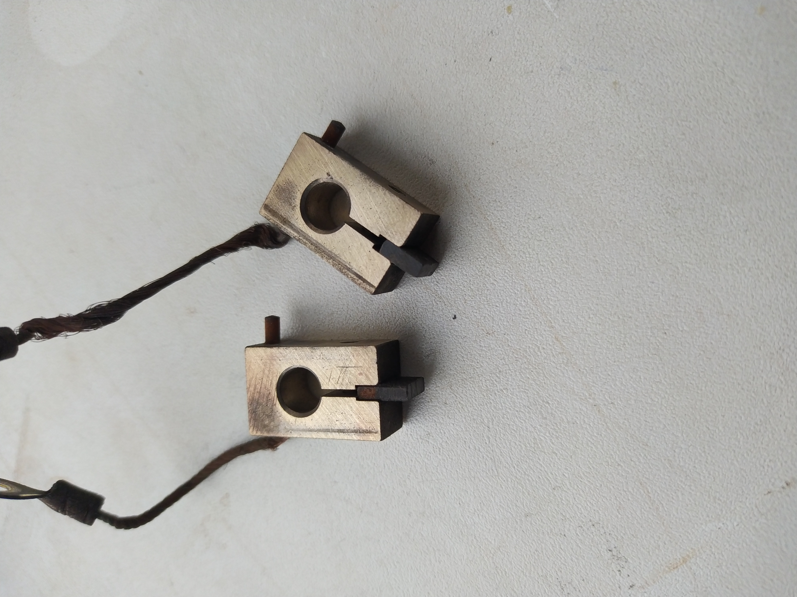

Parametry
Vstupní napětí: 220V, 120V
Výstupní napětí: 0-250V, 0-150V
Max. výstupní proud: 10A
Provozní frekvence: 50 Hz
Popis
Autotransformátor nebo také jiným názvem variak "Křižík RAT 10" je svým principem podobný klasickému transformátoru, ale rozdílem je jedno společné vinutí, po kterém se pohybuje jezdec - "pohyblivá odbočka". Provedení jádra je u mého kousku toroidní, právě kvůli otočnému jezdci a nízké míře elektromagnetického vyzařování (rušení) do okolí. Samotné jádro je železné, což celému trafu značně přidává na indukčnosti, ale také bohužel na hmotnosti. Vinutí je vinuto měděným lakovaným drátem, který na sobě má vybroušenou cestu pro jezdec. Samotný jezdec je uhlíkový, za účelem co nejmenšího přechodového odporu.
Časté problémy
Nejčastější problém je nárůst přechodového odporu nebo dokonce úplná ztráta kontaktu mezi dráhou vinutí a jezdcem. Jelikož je dráha z holé mědi bez jakéhokoliv laku, je dost náchylná na oxidaci a to i pokud je trafo skladováno v dobrých podmínkách. Můj kousek byl skladován v suchu pod střechou a dráha byla celá černá a nevodivá. Řešením je vzít jemný smirkl papír a dráhu opatrně obrousit. Při tom je třeba zvlášť dávat pozor na lakovanou část vinutí a brousit jen dráhu. Dráha je vybroušena tehdy, když je po celé ploše lesklá a hladká. Nadměrné broušení je už potom jen na škodu. Po obroušení je důležité důkladně vyčistit spáry mezi závity od měděného prachu, aby nehrozil zkrat.
 

Dráha a její detail
Další problém, který ani není závada, ale spíš vlastnost je vypadávání jističe při zapojení do sítě. Při zapojení do sítě si trafo kvůli masivnímu jádru vezme docela slušnou proudovou špičku, která docela spolehlivě vyrazí 10A jistič třídy B. Řešením je použít "pomalejší" jistič třídy C nebo D. Když ale není taková možnost např. v bytě (můj případ), dá se použít tzv. "soft-starter", který omezí náběhový proud a jakmile je jádro nasyceno, proudový omezovač se přemostí a trafo je spojeno přímo se sítí.
Mně se při neopatrné manipulaci podařilo zlomit jeden uhlík, takže jsem si ho musel vyrobit. Osvědčilo se ho vybrousit z elektrody vyndané ze zinko-uhlíkové baterie. Uhlík je poměrně křehký, a tak je poměrně důležité při práci s ním používat malý přítlak a trpělivost. :-)
 


Výroba a výměna uhlíků